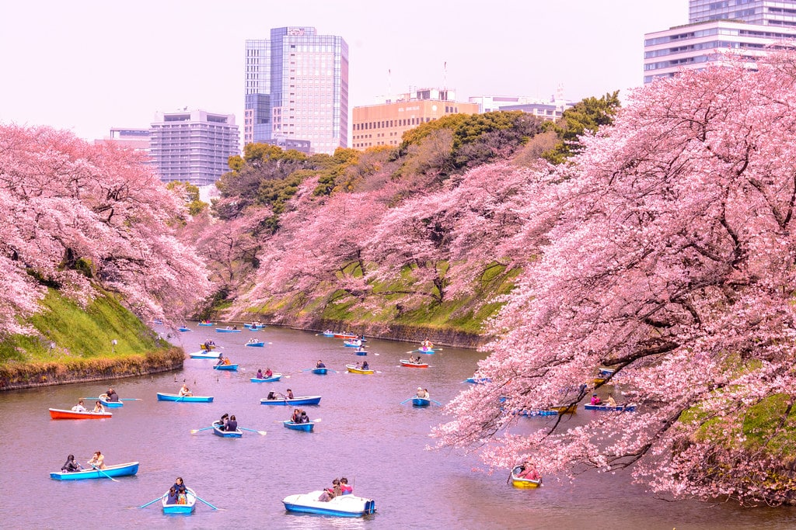
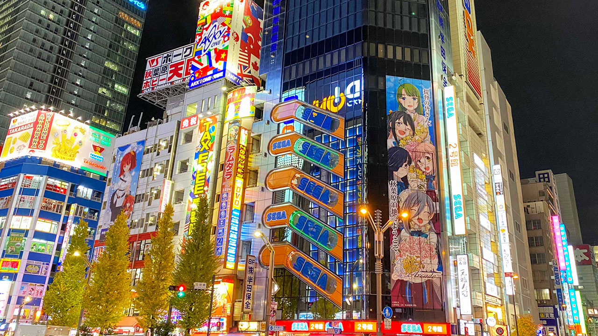

Japón es uno de los destinos turísticos más populares de Asia. No sólo porque Japón mantiene un fuerte sentido de la historia tradicional y cultural al tiempo que es un líder mundial en tecnología y e innovación. Tokio, en particular, es una ciudad emocionante y bulliciosa que cuenta con un sinfín de actividades. Es difícil hacer un resumen de razones para visitar Tokio, pero he pretendido hacer una mezcla de sensaciones, un cóctel que te convenza para viajar a Tokio.
Otra de las razones para visitar Tokio es sin lugar a dudas, pasear por el Foso Chidorigafuchi en época de floración de cerezos. Está ubicado al noroeste del Palacio Imperial y aunque hay muchos lugares de la ciudad donde se pueden ver los cerezos, este es uno de los más alucinantes. Se pueden encontrar 260 variedades de éste árbol que florece entre los meses de marzo y abril y que adorna con su hermoso color el parque, llenando las aguas llenas de pétalos creando así un paisaje de ensueño. También se puede alquilar barcas para dar un paseo y en las noches deleitarse con su iluminación.
Akihabara: situado en el barrio Otaku, es uno de los lugares más populares que a su vez cuenta con varias razones para visitar Tokio y donde se encuentran las tiendas más increíbles de manga, anime, videojuegos y artículos electrónicos para los amantes de éste tipo de mercado que de seguro querrán llevar mucho a casa y a un buen precio.
María Paola Vicentini Díaz - 2do Bachillerato G. IES Viera Y Clavijo
 